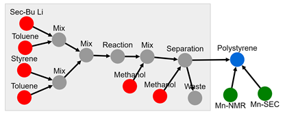

Process¶
The 'process' node contains ingredient list, quantities, and procedure information. A process can be anything from a reaction, reaction + separation, reactive extrusion. Typically, a process results in a change in the "identity" portion of a material node.
Features:
- process node points to materials and data
- required information
- name
- ingredient (material CRIPT node)
- procedure
- product
- optional information
- data (CRIPT node)
- conditions
- properties
- keywords
- history
- note
- auto generate/update:
- _id
- class
- ver_sch
- ver_con (& all child) <-- update with version control node
- date (& all child)
App features to support this node:
- allow additional optional information in
condsection given that it begins with + - units are not stored for officially supported data as all official values are converted to database standard prior to storage
JSON Schema¶
{
"_id": objectId(),
"class": "process",
"ver_sch": string,
"ver_con": {
"_id": objectId(),
"num": string
},
"date": [
{"created": datetime},
{"last_mod": datetime}
],
"name": string,
"ingr": ["see ingredients for details"],
"procedure": string,
"product": [{"_id": objectId(), "name": string}],
"optional attributes"
}
Description¶
| Key | Data Type | Required | Description |
|---|---|---|---|
_id |
objectId() | auto | unique database id |
class |
string | auto | class of node |
ver_sch |
string | auto | schema version; Ex: "v0.1" |
ver_con |
version control object | ||
ver_con/_id |
objectId() | auto | reference id to node history |
ver_con/num |
string | auto | type of node ; Ex: "group" |
date |
datetime object | ||
date/created |
datetime | auto | datetime created |
type/last_mod |
datetime | auto | last modified datetime |
name |
string | required | name of process |
ingr |
list[dict] | required | see identifiers section |
procedure |
string | required | written procedure for the process |
product |
list[dict] | required | the product of the process node; material node |
product/_id |
objectId() | auto | id of product |
product/name |
string | auto | name of product |
Attributes¶
Attributes are optional properties that can be associated with this node. The following list is the officially supported keys. Users may define their own keys by placing a '+' in front of their custom key.
| Key | Data Type | Description |
|---|---|---|
data |
list[dict] | data node |
data/_id |
objectId() | id of data |
data/name |
string | name of data |
data/type |
string | type of data |
cond |
list[dict] | see condition section |
prop |
list[dict] | see condition section |
keywords |
list[string] | see keywords section below |
history |
dict | processing history |
note |
string | free-form space to store any text |
Ingredients¶
Ingredients are originally defined as a material node and linked here. A minimum of 1 quantity is required. List of supported quantities (quant), units and valid ranges. Units are not stored as all values are converted to database standard prior to storage.
{
"_id": objectId(),
"name": string,
"quant": [
{"key": string, "value": double, "uncer": double}
]
}
| Key | Units | Range | Description |
|---|---|---|---|
mass |
g | [0, 1.79e+308] | mass |
vol |
ml | [0, 1.79e+308] | volume |
pres |
kPa | [0, 1.79e+308] | partial pressure |
mole |
mmol | [0, 1.79e+308] | mole |
equiv |
[0, 1.79e+308] | equivalence | |
mass_frac |
[0-1] | mass fraction | |
mole_frac |
[0-1] | mole fraction | |
vol_frac |
[0-1] | volume fraction |
Conditions¶
Conditions are any process variable that the user would like to explicitly expose. Conditions such as temperature,
pressure, or reaction times are examples. The conditions are stored in a dictionary. Units are only used for user
defined attributes which begin with a +.
{
"key": string,
"method": string,
"value": double,
"uncer": double,
"unit": string,
"data": {"_id": ObjectID, "name": string, "type": string},
"note": "string"
}
key |
Units | Description |
|---|---|---|
time |
min | time |
temp |
degC | temperature |
pres |
kPa | pressure (absolute) |
Properties¶
Properties consist of the following structure:
{
"key": string,
"method": string,
"value": double,
"uncer": double,
"unit": string,
"data": {"_id": ObjectID, "name": string, "type": string},
"note": "string"
}
| Key | Method | Range | Units | Description |
|---|---|---|---|---|
conv_mon |
['nmr', 'sec'] | [0, 1.2] | None | how much monomer that has reacted |
conv_init |
['nmr', 'sec'] | [0, 1.2] | None | how much initiator that has reacted |
init_eff |
['nmr', 'sec'] | [0, 1.2] | None | The proportion of initiators that result in an active propagating species |
Keywords¶
Keywords are an optional field that allow users to classify the experiment. Selecting multiple keywords is allowed.
- synthesis
- chain_growth
- living_poly
- controlled_poly
- radical_poly
- rop
- romp
- atrp
- nmp
- raft
- step_growth
- condensation
- reactive_processing
- extrusion
-
blow_molding
-
kinetics
Process history¶
Under construction
The process history is a feature in development. The feature will take the procedure given by an user and convert it
into an expand-graph detailing intermediate steps. This feature will be powered by a NLP algorithm that is under
development.

Example¶
{
"_id": "507f191e810c19729de860ec",
"type": "process",
"ver_sch": "v0.1",
"ver_con": {
"_id": "507f191e810c19729de860cb",
"num": "v0.1"
},
"date": [
{"created": 1612889183},
{"last_mod": 1612889123}
],
"notes": "",
"expt": {"_id": "507f191e810c19729de860em", "name": "anionic polymerization of styrene"},
"data": [{"_id": "507f191e810c19729de860em", "name": "NMR Kinetics"}],
"product": [{"_id": "507f191e810c19729de5d0em", "name": "polystyrene"}],
"name": "polymerization",
"ingr": [
{
"_id": "507f191e810c19729de860em",
"name": "styrene",
"chem_form": "C8H8",
"quantities": [
{"type": "mass", "value": 20.3},
{"type": "vol", "value": 22.3},
{"type": "mole", "value": 195},
{"type": "equiv", "value": 50}
]
},
{
"_id": "507f191e810c19729de560em",
"name": "sec-bu li",
"chem_form": "C4H9Li1",
"quantities": [
{"type": "vol", "value": 3},
{"type": "mole", "value": 3.9},
{"type": "equiv", "value": 1}
]
},
{
"_id": "507f191e810c19729de560em",
"name": "toluene",
"chem_form": "C7H8",
"quantities": [
{"type": "mass", "value": 188},
{"type": "vol", "value": 216},
{"type": "mole", "value": 2039},
{"type": "equiv", "value": 522}
]
},
{
"_id": "507f191e810c19729de560em",
"name": "methanol",
"chem_form": "C1H4O1",
"quantities": [
{"type": "mass", "value": 2.37},
{"type": "vol", "value": 3},
{"type": "mole", "value": 74},
{"type": "equiv", "value": 19}
]
}
],
"procedure": "In an argon filled glovebox, a round bottom flask was filled with 216 ml of dried toluene. The solution of secBuLi (3 ml, 3.9 mmol) was added next, followed by styrene (22.3 g, 176 mmol) to initiate the polymerization. The reaction mixture immediately turned orange. After 30 min, the reaction was quenched with the addition of 3 ml of methanol. The polymer was isolated by precipitation in methanol 3 times and dried under vacuum.",
"cond": {
"time": {"value": [60]},
"temp": {"value": [25]}
},
"attr": {}
}